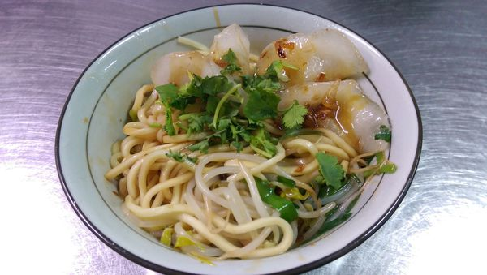
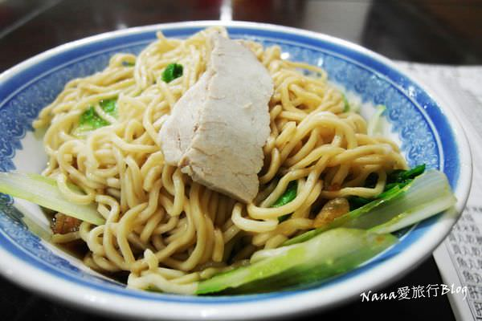

| 台中 | 彰化 | 苗栗 |
苗栗：
苗栗是一個客家人居多的城市，每年五月桐花生開的時候，就會有屬於桐花的季節， 這個季節就叫做桐花祭，桐花季顧名思義就是油桐花的季節，客家桐花祭的由來主要是因為， 桐花大部分生長於客家村落的附近，於是形成了客家人早年重要經濟作物之一， 油桐花的果實可以榨油、製作火柴棒、木屐，所以客家人拿它的果實將其發揚光大舉辦客家桐花祭， 希望邀請大家共同前往客家桐花祭，邀請大家到客家庄旅遊，除此之外，也以「祭」這個字表達出向神明致敬之意， 宣揚客家人文化傳統、肅穆、潔淨、虔誠、祈福的精神。 所以也衍生出了許多關於油桐花的美食， 例如：用油桐花泡出來的花茶，跟別的花茶比較的話喝起來有種別的風味，還有就是控肉， 用桐花滷控肉這就沒看過了吧~!可以來苗栗體驗課看看客家人每年盛大的祭典順便吃吃看他們的客家美食吧~!
首先! 第一家：晶品小吃
晶晶小吃是一家外地人不容易發現的巷弄小店，雖然位置不起眼，
但是裡面的餐點可是真正道地的客家味呢~ 一般市面上比較常看到的水晶餃與面分愾賣，
這家有提供合併的水晶餃面還不錯吃。水晶餃的外觀看起來晶瑩剔透，口感Q彈但阮，
裡面包的是芹菜，吃起來有獨特的香氣，是大都市很難找到的好味道。

(圖片來源：https://goo.gl/DVpXe8)
第二家：楊文忠蛋黃麵
楊文忠蛋黃麵是曾獲時尚玩家以及TVBS推薦的名店，這裡的蛋黃麵就是招牌餐點，
蛋黃麵的主要配料有肉片以及豆芽菜，真正有特色的地方則在於麵條和湯汁。
麵條吃起來特別的Q彈，湯汁則很明顯地有融入蛋黃之，所以配上麵條後又增添了濃濃的淡香，
和一般的乾麵只有單調鹹味相比，明顯更有特色。

(圖片來源：https://goo.gl/xD7qw7)